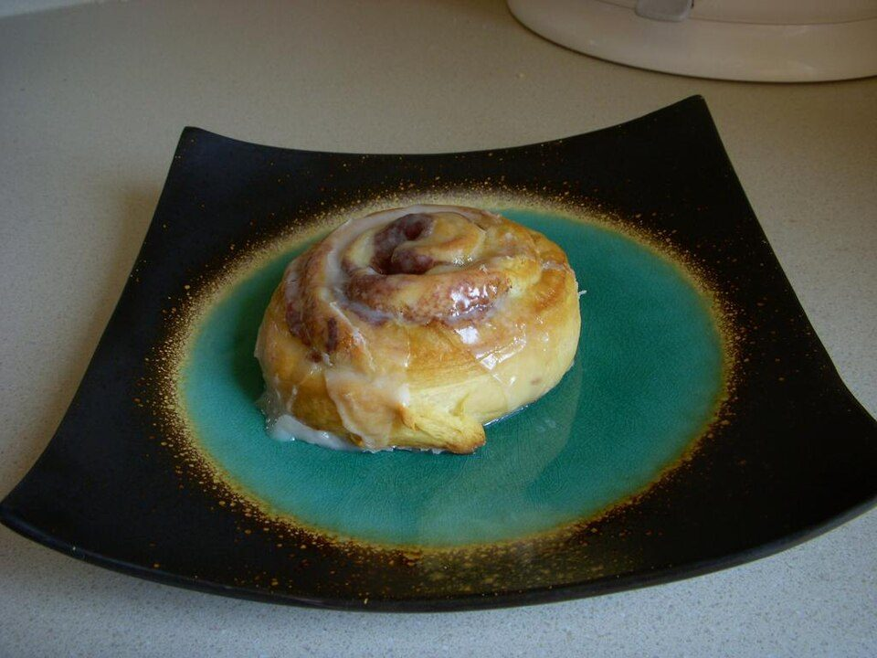

店のこと
図の見かた
確認できているのは所在地とInstagramのみです。ほかは準備中です。
フォトギャラリー(イメージ)
パンの断面


写真はイメージです。お店のものではなく、お店で提供している内容を示すものでもありません。
部位の読みかた
三枚の皿と、それを支えるもの
図は上から順に、1上段プレート、2中段プレート、3下段プレート。4の中心支柱が三枚を貫き、5の持ち手が上に、6の台座が下に付きます。
これは制作側の連想で、お店の理念・由来とは無関係です。実際の店内の備品や提供内容を示すものではありません。
凡例
六つの部位
- 1上段プレートいちばん上に載せる、小さめの丸い皿。
- 2中段プレート真ん中に重ねる、ひと回り大きい皿。
- 3下段プレートいちばん下に置く、最も大きい皿。
- 4中心支柱三枚の皿を貫いて支える、細い縦の棒。
- 5持ち手支柱の先に付けた、持ち上げるための輪。
- 6台座スタンド全体を受ける、底の円い脚。
フォトギャラリー(イメージ)
焼き菓子とパン



写真はイメージです。お店のものではなく、お店で提供している内容を示すものでもありません。
ご案内
確認できていること
| 所在地 | 〒328-0007 栃木県栃木市大塚町２５０１−１ |
|---|---|
| 電話 | 準備中 |
| 営業時間 | 準備中 |
| 定休日 | 準備中 |
| ご予約 | 準備中 |
| 駐車場 | 準備中 |
| SNS | Instagram @salon.de.cafe.ikakura |